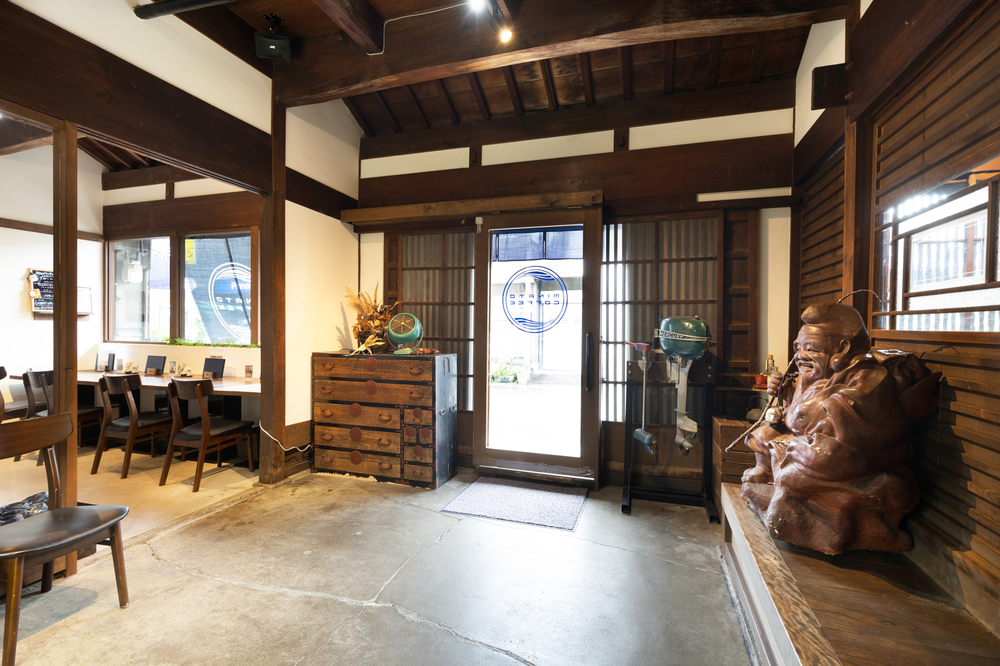
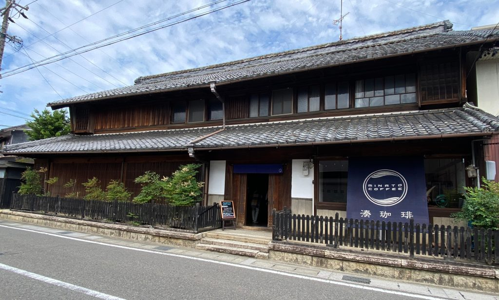
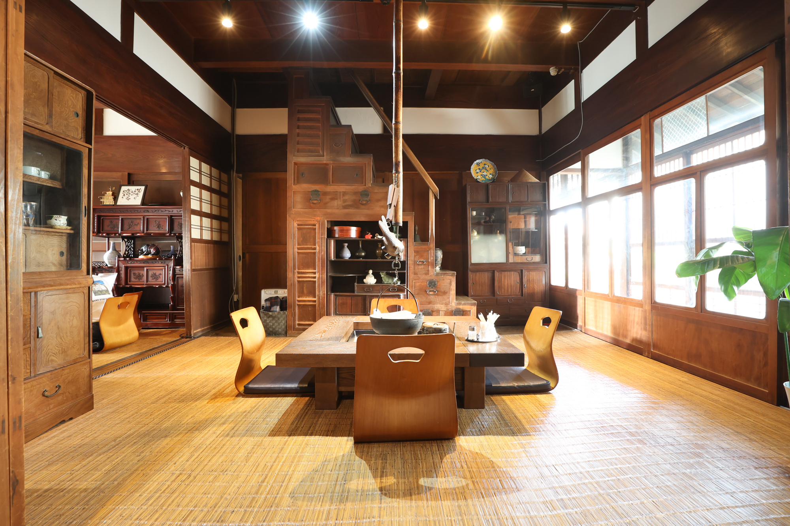
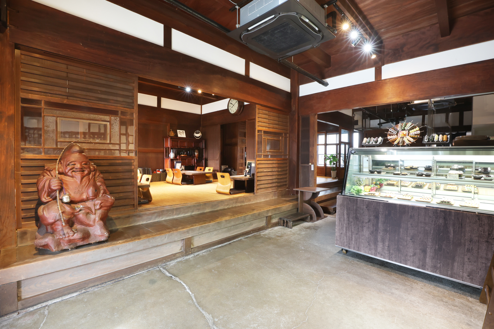
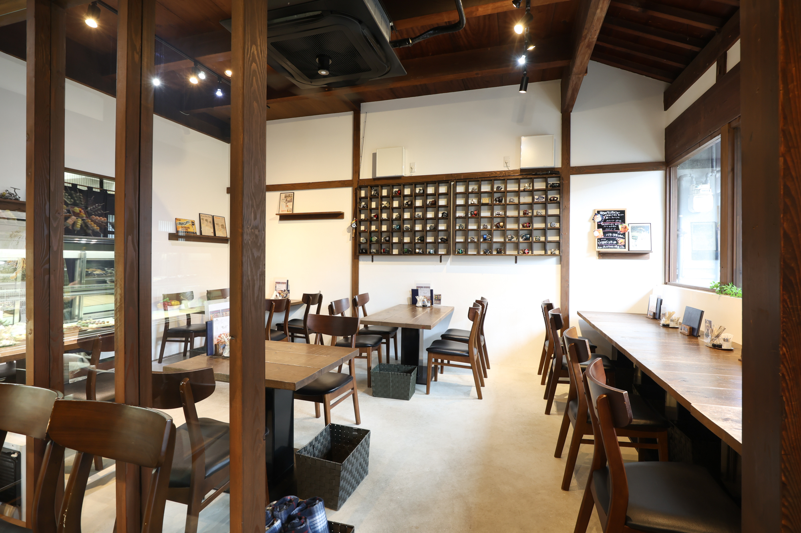
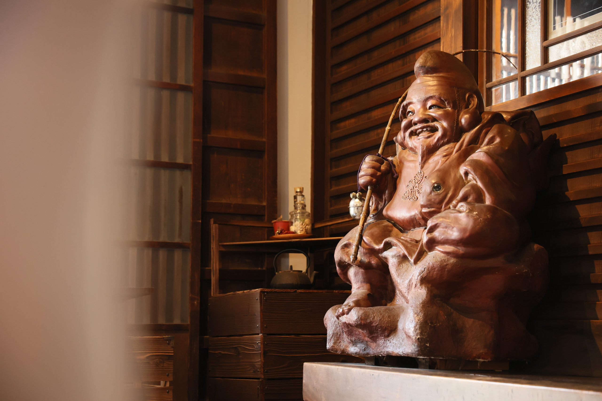

屋敷の来歴
湊珈琲の建物は大正2年築で、築100年以上になります。当時の鏡島村の村長の屋敷を改装したもので、岐阜市景観奨励賞を受賞しました。
店は旧中山道沿い、鏡島弘法の門前にあります。バス停「鏡島弘法前」から徒歩1分、JR西岐阜駅から徒歩15分です。


湊珈琲の建物は大正2年築で、築100年以上になります。当時の鏡島村の村長の屋敷を改装したもので、岐阜市景観奨励賞を受賞しました。
店は旧中山道沿い、鏡島弘法の門前にあります。バス停「鏡島弘法前」から徒歩1分、JR西岐阜駅から徒歩15分です。

テーブル席16席、座敷14席、囲炉裏席（最大8名）、縁側席2席、窓際カウンターがあります。




店内には、守り神の恵比寿様がいらっしゃいます。
| 月〜金 | 9:00〜17:00 |
|---|---|
| 土日祝 | 8:00〜17:00 |
| 定休日 | 火曜日（祝日の場合は営業） |
| モーニング | 開店〜11:00 |
| ランチ | 11:30〜14:00 |
週末は混み合います。お越しの前に、お電話で席をご確認ください。
| 住所 | 〒501-0124 岐阜県岐阜市鏡島中2丁目21-5 |
|---|---|
| 電話 | 058-333-1123 |
| 電車・バス | JR岐阜駅前から岐阜バスで約16分、「鏡島弘法前」下車・徒歩1分。JR西岐阜駅から徒歩15分。 |
| 駐車場 | あり。店舗裏と、東へ約100mの第2・第3駐車場をご利用いただけます。来店時に停めた場所をスタッフへお伝えください。 |
お電話のみで承ります。直接お電話ください（058-333-1123）。
店舗裏と、東へ約100mの第2・第3駐車場があります。来店時に停めた場所をスタッフへお伝えください。
開店から11:00までです。開店時刻は月〜金が9:00、土日祝が8:00です。
テイクアウトできます。あんの種類は季節により変わります。
お支払い方法はお問い合わせください（058-333-1123）。
火曜日です。祝日の場合は営業します。
掲載している写真は、店舗が公式サイト（minatocoffee.com）で公開している店舗の写真です。気になるところがあればお知らせください。その内容で修正して、正式なサイトとして納品します。